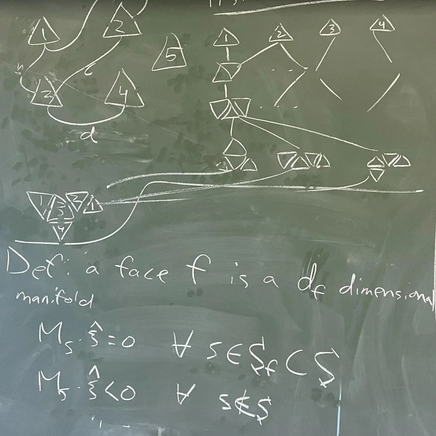

Carl Goodrich
Affiliation: ISTA
Title: The statistical mechanics of stochastic programmable self-assembly
Abstract: Biology assembles sophisticated molecular machines from a limited repertoire of components, often using many copies of the same protein within a single complex. I will discuss how such component reuse can be exploited in programmable self-assembly, where stochastic binding creates competition among many possible structures. For fixed binding rules, equilibrium statistical mechanics imposes constraints on binding energies and chemical potentials that define a high-dimensional convex polyhedral cone. Its faces identify which structures can assemble at high yield, which can coexist, and when unwanted structures are unavoidable, providing an exact and useful framework for inverse design. If time permits, I will also discuss some ideas about how bio-inspired functional behavior can be programmed into self-assembled nanostructures.
